Applied Engineering Sciences · MSU
Product design and mechanical engineering — working across CAD, CNC manufacturing, and code.
An ergonomic, height- and angle-adjustable laptop stand designed in Siemens NX, built around adjustable support arms, pivot joints, and a fully constrained assembly.
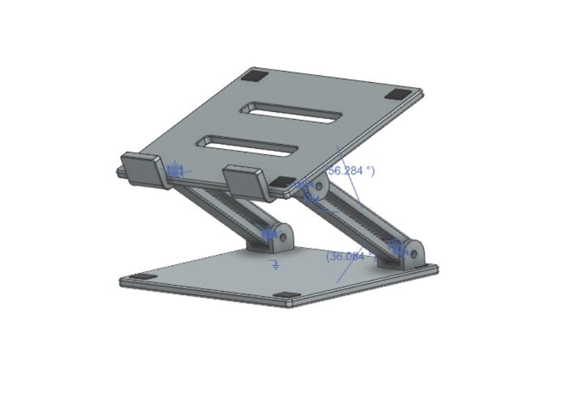
Overview
Long hours on a laptop push the screen too low and the wrists into awkward positions. This project explores a stand that lets the user tune both the height and the viewing angle of the laptop to fit their own posture and workspace.
The design was developed entirely in Siemens NX as a digital product model: a base plate, a laptop platform, and a pair of support arms joined by pivots, brought together in a constrained assembly that can be moved through its range of positions.
The challenge
Design a stand that is genuinely adjustable while still feeling stable and simple to use — the mechanism should add flexibility without adding complexity for the user.
Design & process
Two support arms carry the laptop platform. Changing their angle raises, lowers, and tilts the platform, so one product can serve different users, desks, and tasks.
Clevis-style brackets on the base plate and the underside of the platform form pivot joints at both ends of each arm, giving the stand its range of motion.
Mating and angle constraints make the parts behave like a real mechanism — the arms rotate about their pivots, and the platform follows.
Raising the screen toward eye level, angling the keyboard comfortably, and keeping the laptop secure with front lips and corner pads.
Components
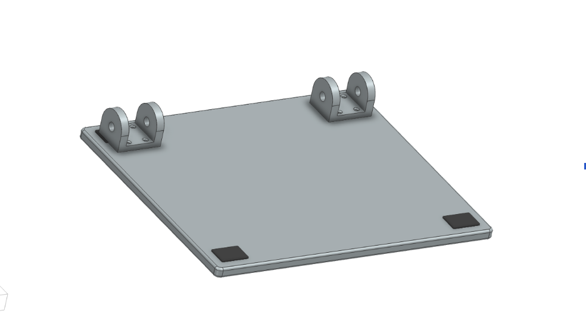
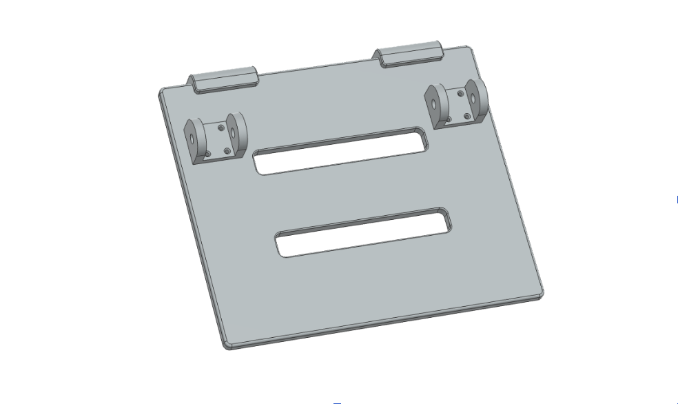
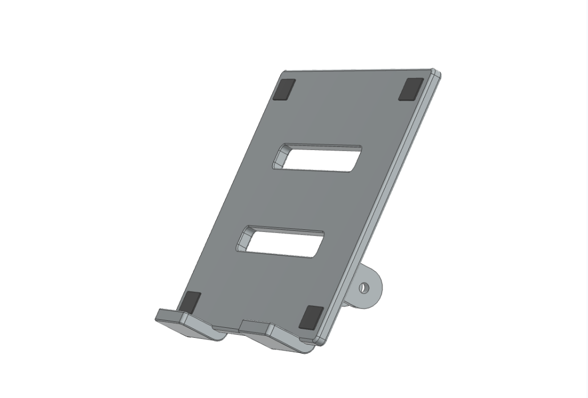
Range of motion
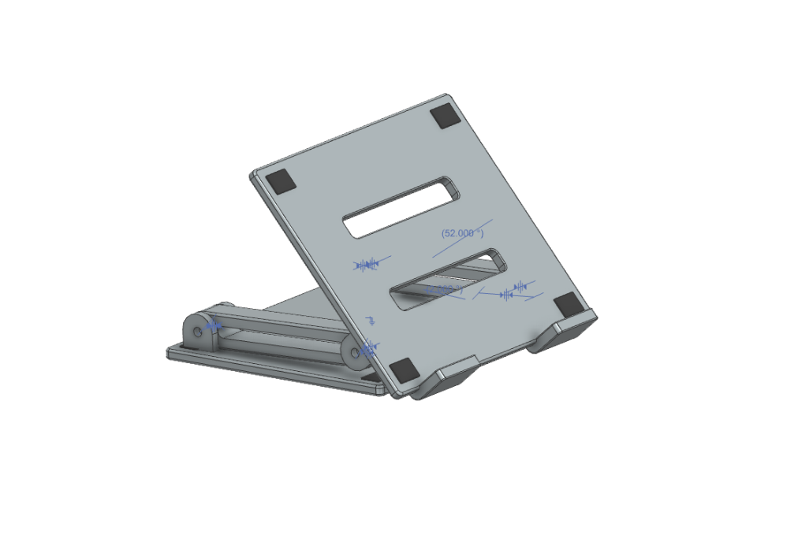
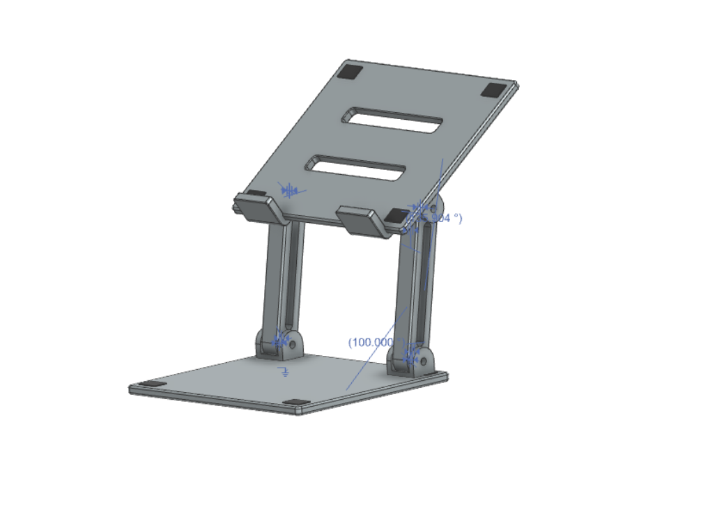
Arms & pivot joints
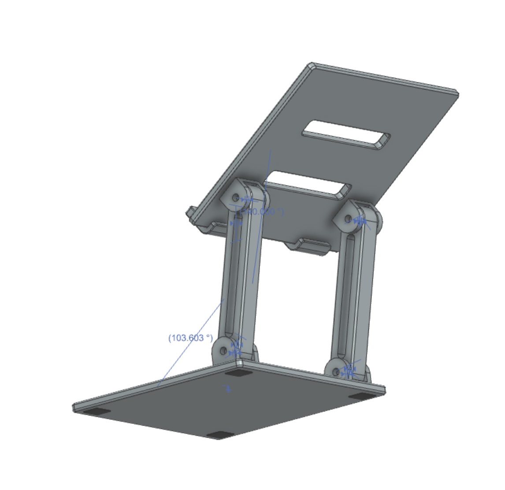
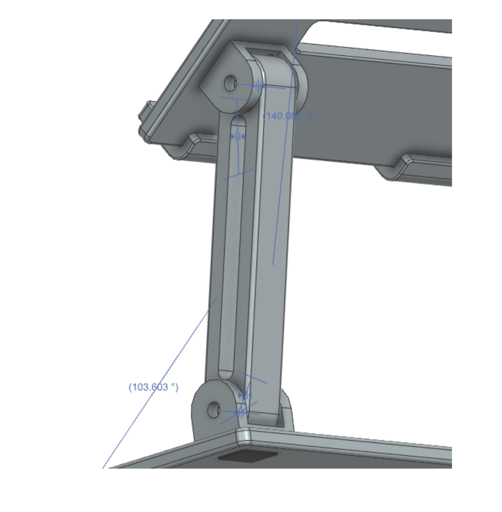
Key features
Result
A complete Siemens NX part and assembly model. The constrained assembly can be posed from a folded position through mid-height and raised configurations, showing how the mechanism is intended to move.
CAD design project. It has not been manufactured or physically tested.
A custom aluminum golf club face with pyramidal groove geometry, programmed in Mastercam, CNC-machined, and evaluated over 100 test shots.
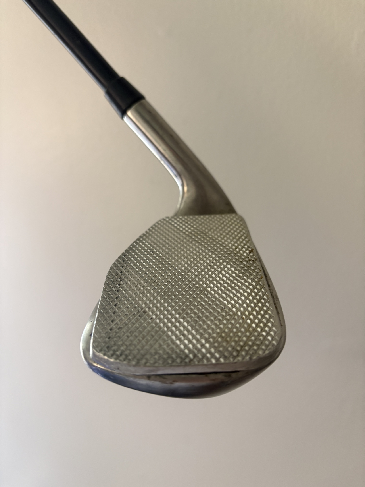
Overview
The grooves on a golf club face influence how much spin the ball carries and how it behaves after it lands. This project asked: what happens if the conventional groove pattern is replaced with a pyramidal geometry?
The face was designed to reduce ball spin and produce a flatter trajectory, programmed in Mastercam, converted to G-code, and machined from aluminum on a CNC vertical mill — then taken to the range and hit.
The challenge
Produce an accurate, repeatable pyramidal surface pattern on a small aluminum part, then evaluate whether it changed the ball's behavior in a way that could be observed.
Design & process
Instead of straight grooves, the face is covered in a grid of small pyramids, intended to reduce ball spin and produce a flatter trajectory.
2.5D roughing and finishing toolpaths produce the face profile and the pyramid pattern from aluminum stock.
Post-processed to G-code and run on a CNC vertical mill; the finished part was dimensionally verified against the CAD design.
Evaluated over 100 test shots in comparative range testing against a standard club face.
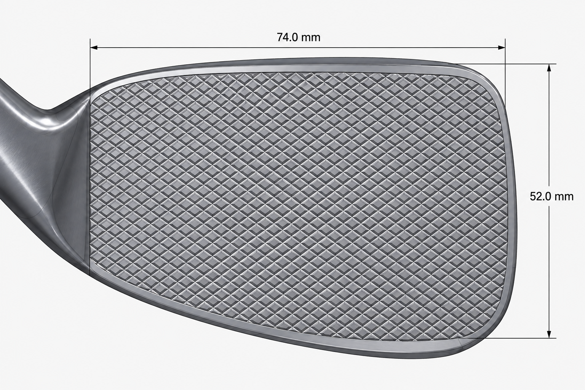
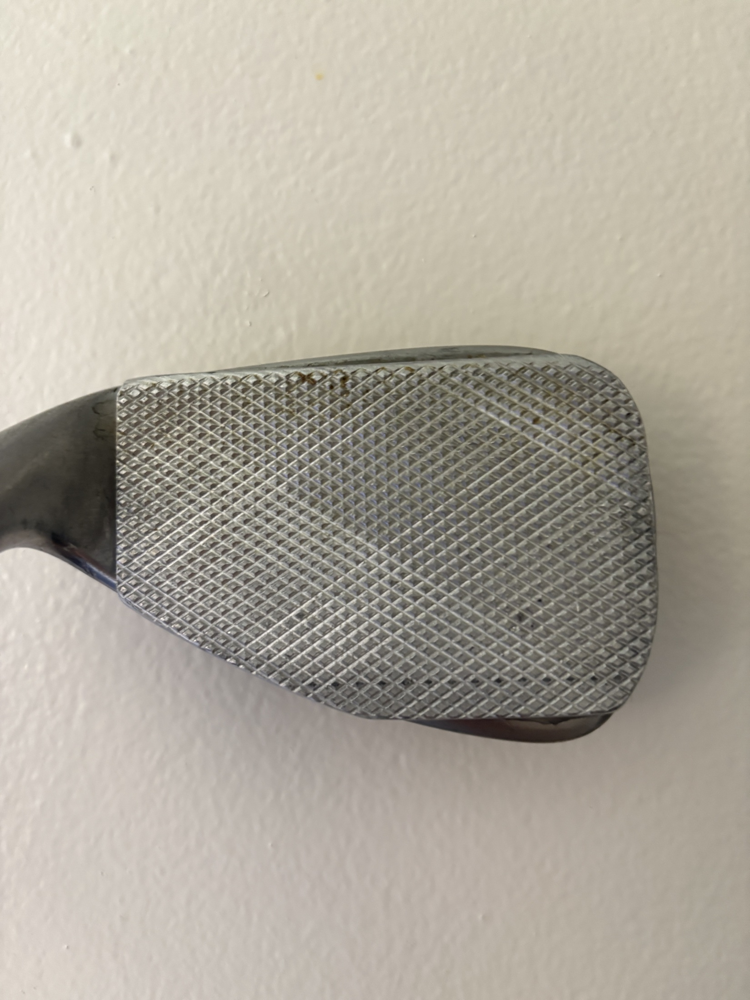
Key features
What the testing showed
Across 100 test shots, I observed substantially reduced post-landing roll on most shots compared with a standard club face.
Note: Results are summarized qualitatively; no specific measured values are claimed. The face is a non-USGA-conforming prototype built for experimentation.
What I learned
Experience
Technical Engineering Assistant
What I bring
I show up prepared and follow through. Working with professional engineers has taught me that accuracy and reliability matter as much as technical skill.
My work spans parametric CAD, building information models, CNC programming, and software. I'm comfortable switching contexts and tools to fit the problem.
I learn new technical tools quickly — across six CAD and CAM platforms, three programming languages, and AI-assisted development with Claude Code.
Contact
See the full interactive portfolio
engineering-portfolio-sable.vercel.app